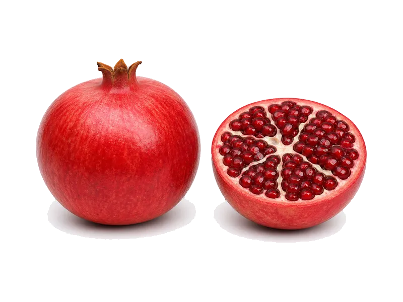

Owoce
Granat
Granat: 1.7 g białka, 83 kcal, 19 g węglowodanów i 1.2 g tłuszczu na 100 g. Kategoria: Owoce.
Kalorie83 kcalna 100 g
Białko / proteiny1.7 g
Węglowodany19 g
Tłuszcz1.2 g
Cena (szac.)~1,50 złza 100 g
Ceny zaktualizowano: sierpień 2026 (szacunek — ceny w popularnych supermarketach)
Porcja: sztuka (150g)
| Kalorie | 125 kcal |
|---|---|
| Białko | 2.5 g |
| Węglowodany | 28.5 g |
| Tłuszcz | 1.8 g |
| Cena (szac.) | ~2,29 zł |
Szczegółowe składniki odżywcze na 100 g
| Wartość energetyczna (kalorie) | 83 kcal |
|---|---|
| Białko (proteiny) | 1.7 g |
| Węglowodany | 19 g |
| Tłuszcz | 1.2 g |
| Tłuszcze nasycone | 0.2 g |
| Tłuszcze nienasycone | 1 g |
| Witaminy i minerały (skrót) | Witamina C, Potas, Miedź |
| Współczynnik kcal / 1 g białka | 48.8 |
| Cena produktu (szac. za 100 g) | ~1,50 zł |
| Cena za 100 g białka (szac.) | ~89,80 zł |
Witaminy i minerały na 100 g
Ilość w 100 g produktu oraz orientacyjny % dziennego zapotrzebowania (RDA) dla dorosłej osoby. Żelazo wg normy dla kobiet; sód jako % limitu. Wartości typowe (USDA / tabele żywieniowe / etykiety) — mogą się różnić między markami.
-
Witamina A 30 µg
-
Witamina C 30 mg
-
Witamina E 0.3 mg
-
Witamina K 5 µg
-
Witamina B6 0.08 mg
-
Witamina B9 (foliany) 20 µg
-
Wapń 15 mg
-
Żelazo 0.3 mg
-
Magnez 12 mg
-
Fosfor 20 mg
-
Potas 200 mg
-
Miedź 50 µg
-
Mangan 0.1 mg